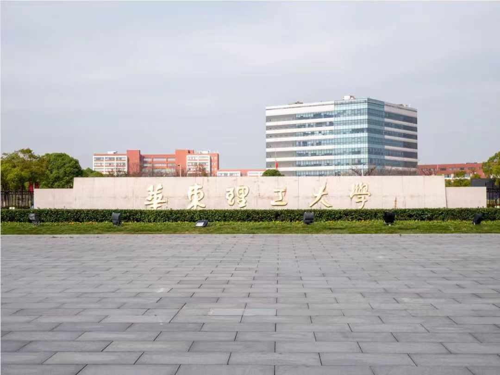
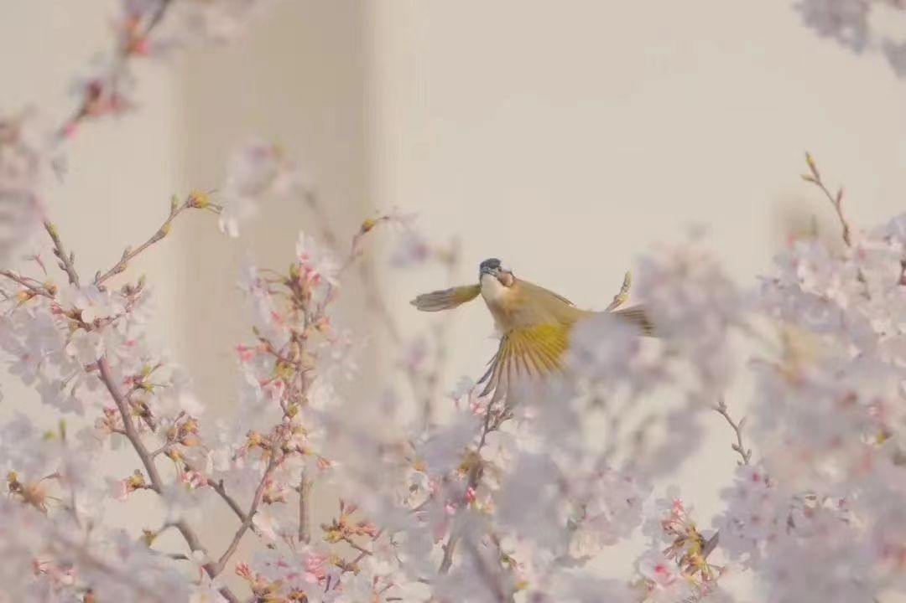
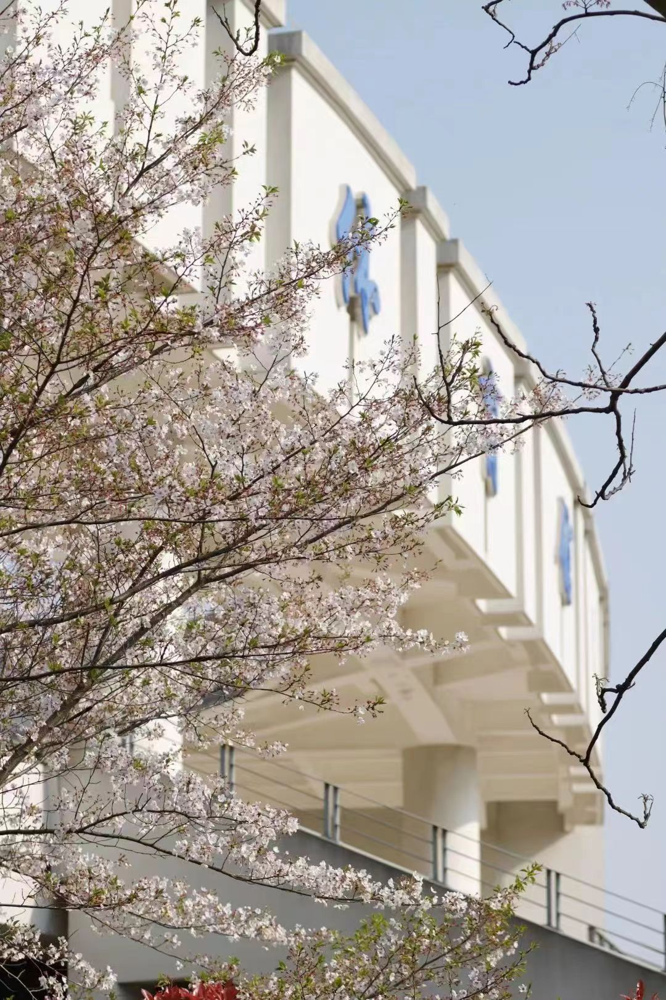
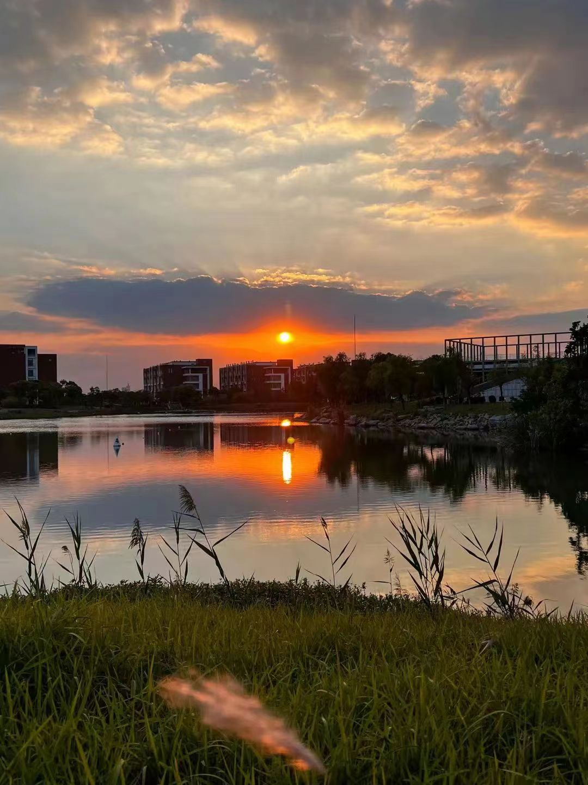
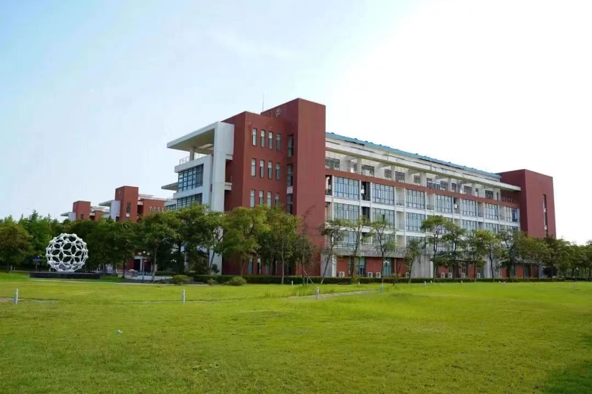
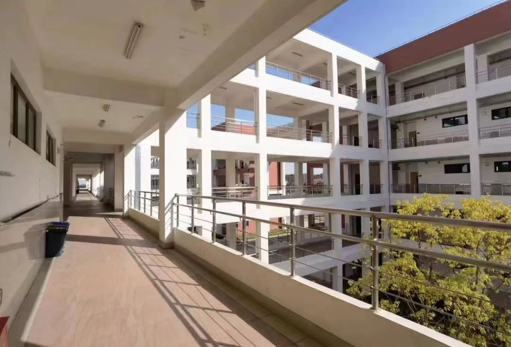

华理一角
-
图书馆

-
花与鸟
-
夕阳
-
教学楼
同学简介
华东理工大学奉贤校区有着众多标志性风景和建筑。例如位于学校中心的通海湖，湖水在阳光的照射下熠熠生辉，充满了生机与活力，清澈的湖面映射出蓝色的天空与红色的教学楼。湖面上雾光蒙蒙，湖中烟波浩淼，给一旁图书馆内刻苦奋斗的同学们带去心灵上的放松。 学校北门旁的向日葵花海也同样令人印象深刻，冬天荒芜的土地会在春天来临之际奇迹般地生长出连片的花朵，偶尔骑车路过，远远望过去仿佛看见了一片金色的海洋。如果有空亲身前去，置身其中，就能看见每一朵花都在微风中轻轻摇曳，散发着淡淡的香气，让人不禁沉醉其中。 除了自然风光，华东理工大学还有着不少优秀的人文景色，例如实验楼旁边树立着的C60分子模型、蛋白质泛素浮雕等。这些雕塑体现了我校优秀的化工教学实力，象征着我校对教育教学事业的重视，激励着下一代学子继续努力。